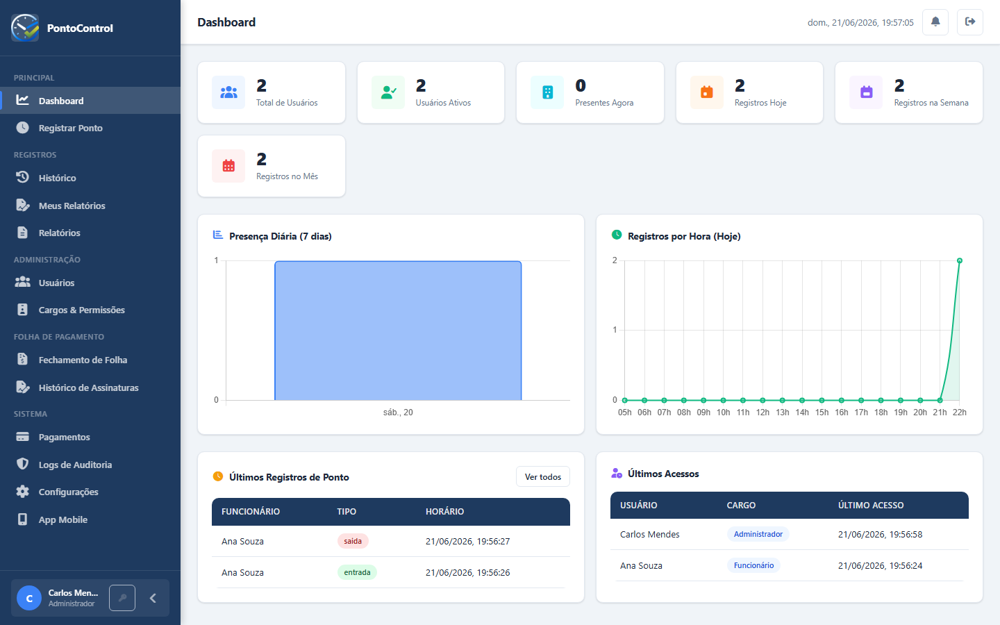
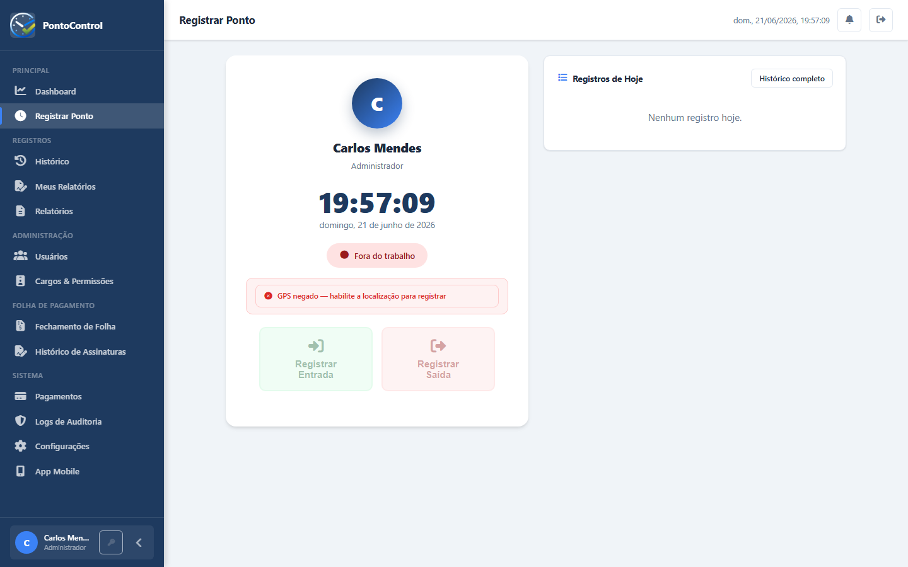
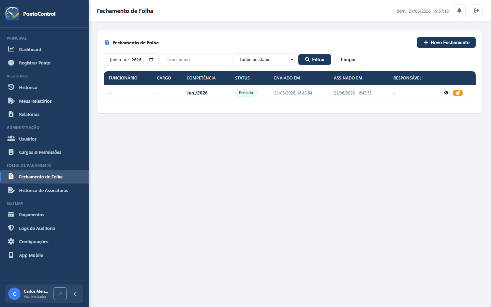

PontoControl reúne registro de ponto com foto e GPS, gestão de equipes, fechamento de folha com assinatura digital e relatórios automáticos — tudo em um único sistema, na web e no celular.

Da entrada do funcionário ao fechamento da folha — sem planilhas, sem retrabalho, sem papel.
Entrada e saída com foto, GPS e horário exato — direto do navegador ou do aplicativo Android.
Cadastre funcionários, defina cargos e permissões, e acompanhe presença em tempo real.
Banco de horas, faltas e atrasos calculados automaticamente, com workflow completo de aprovação.
Colaborador e responsável assinam o fechamento desenhando na tela — documento com validade jurídica.
Todo registro de ponto gera um comprovante enviado automaticamente por e-mail ao colaborador.
Exporte em PDF ou Excel com um clique — histórico, presença, horas extras e muito mais.
Selfie obrigatória, localização GPS e horário do servidor — eliminando fraudes e dando segurança jurídica para a empresa e para o colaborador.


O colaborador revisa e assina o relatório do período; o responsável assina por último, finalizando o documento — que é enviado automaticamente por e-mail em PDF.
A mesma experiência, os mesmos dados, em qualquer dispositivo. Versão iPhone em desenvolvimento.
Comece gratuitamente, sem cartão de crédito. Configure sua empresa em poucos minutos.
Criar conta gratuita